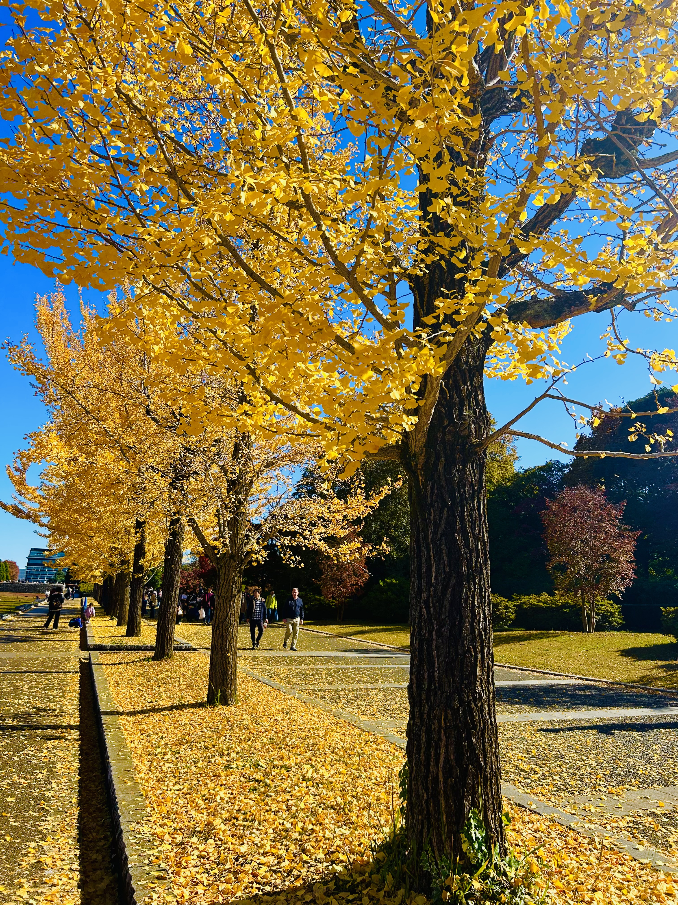
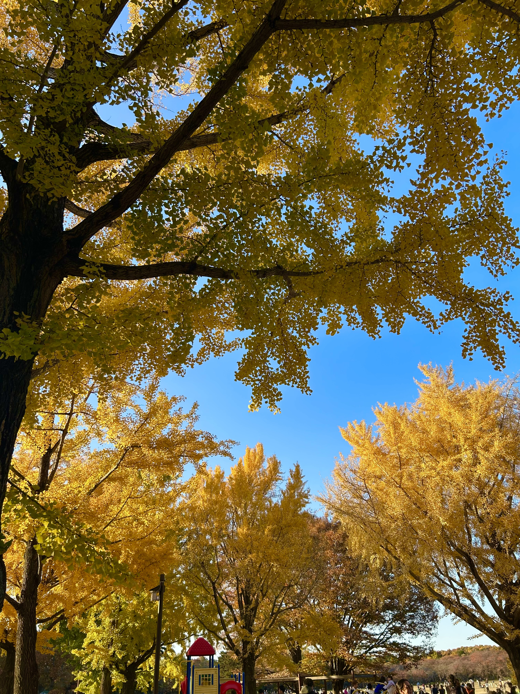
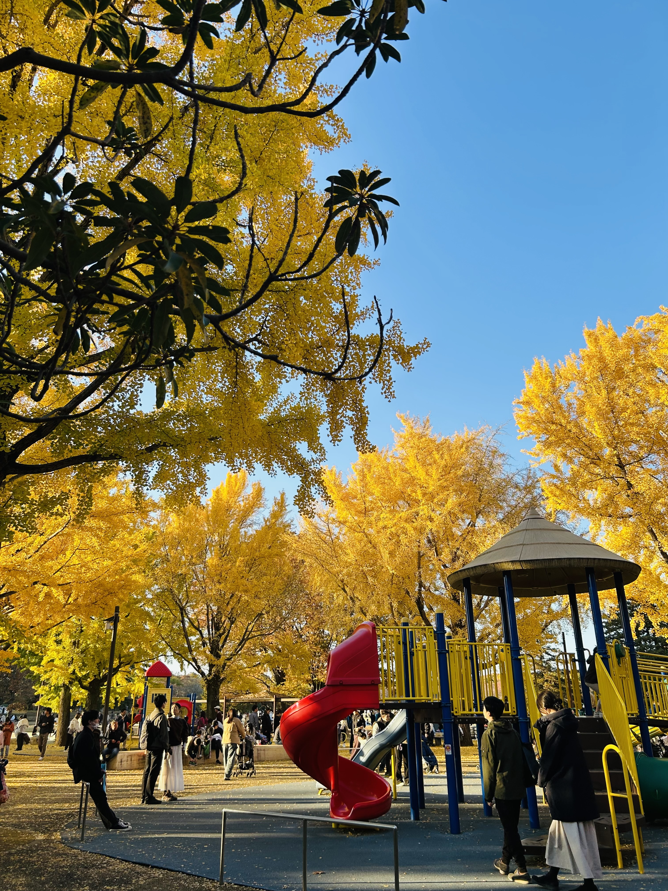
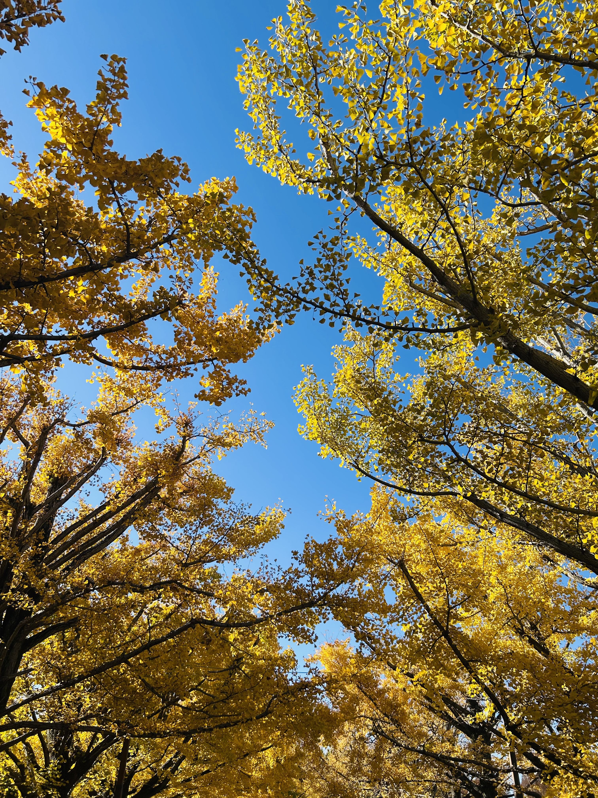
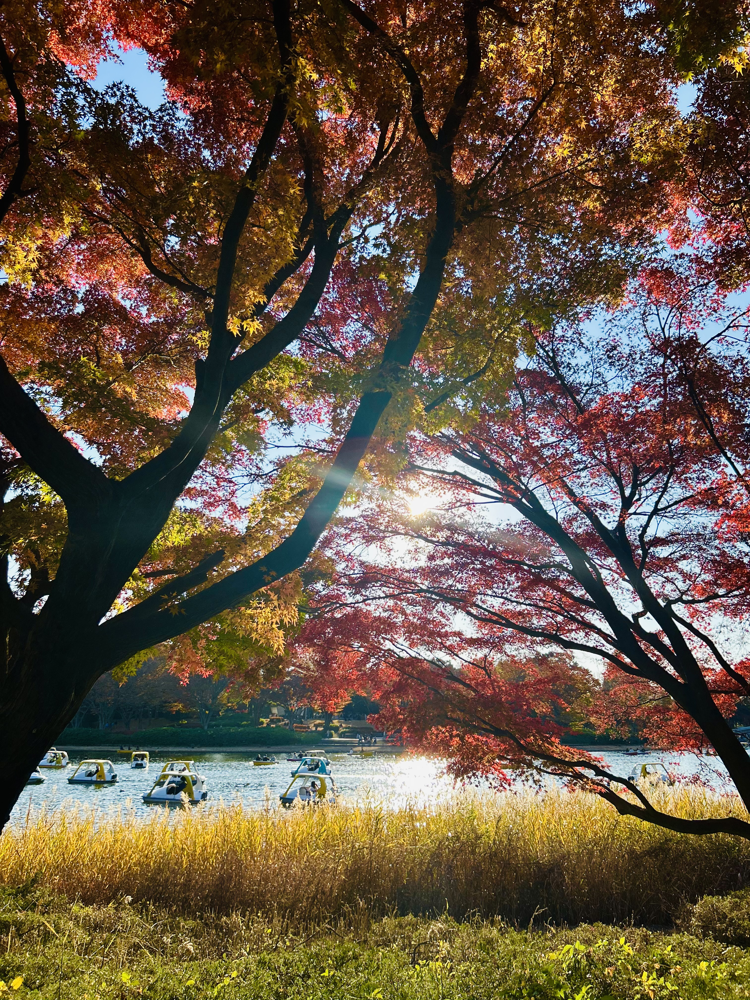
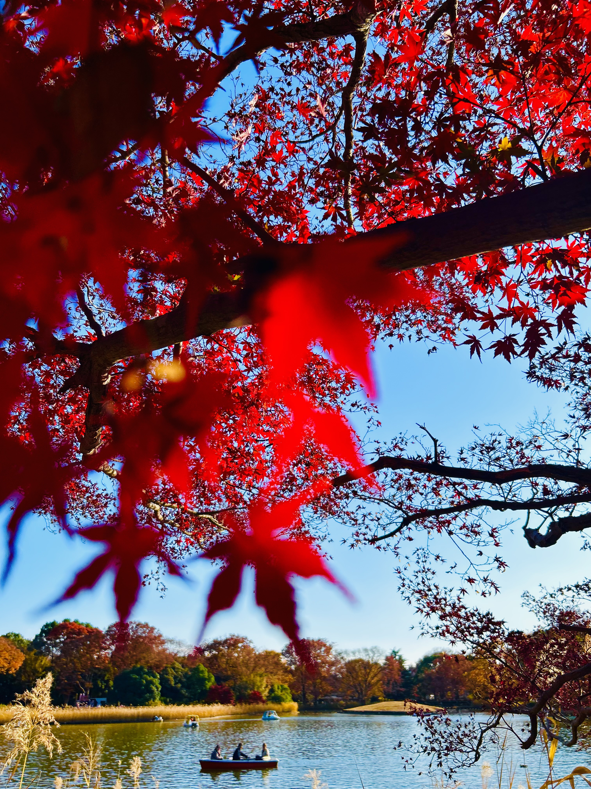
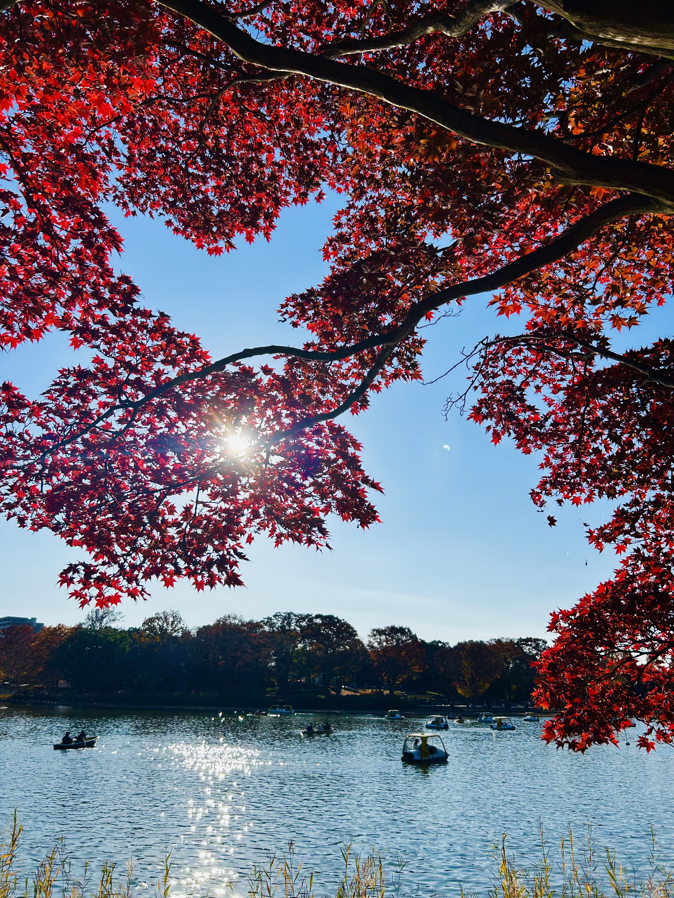
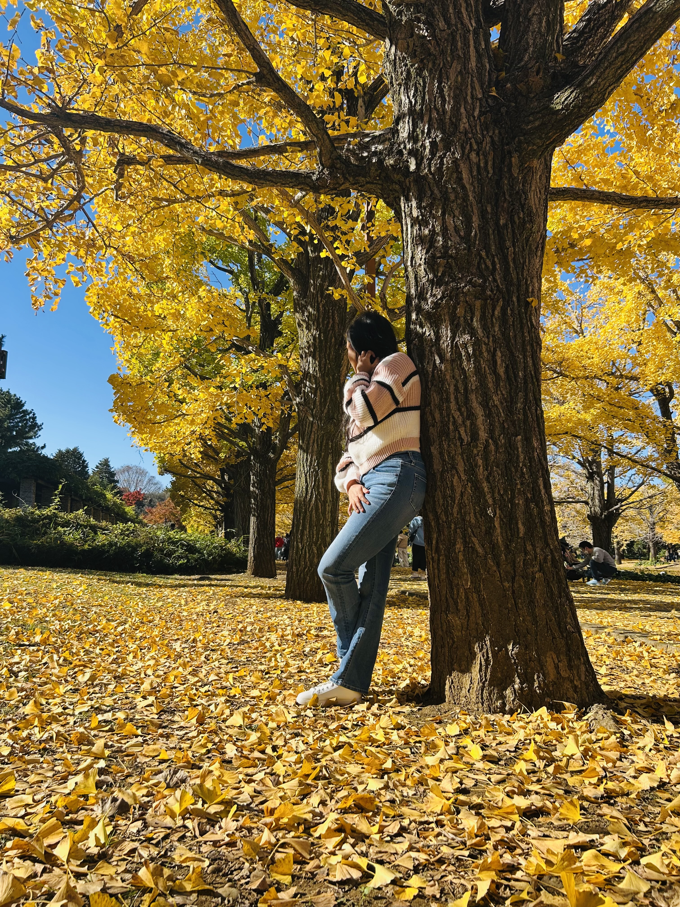
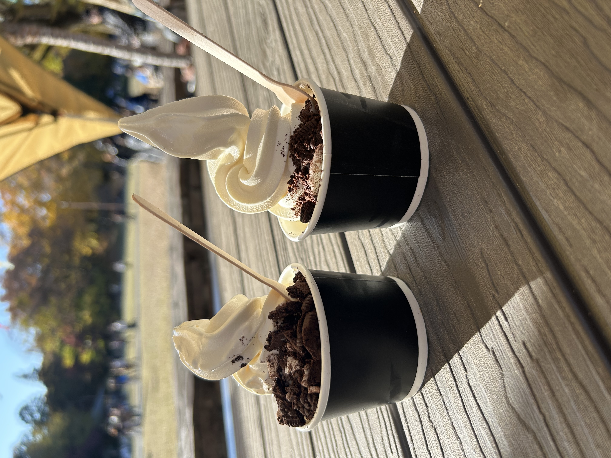
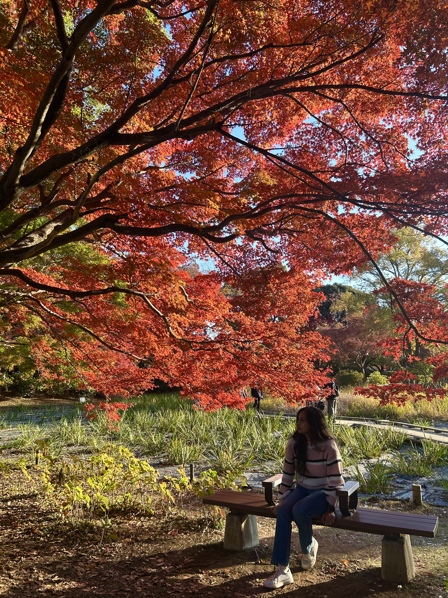

Showa Kinen Park in autumn is famous for its vibrant yellow flowers, especially the fields of bright canola blooms and golden ginkgo trees. Walking through these yellow carpets feels like stepping into a cheerful painting. The warm sunlight on the yellow petals makes everything glow beautifully, perfect for photography or a peaceful stroll. 🌼🍂




Beyond the flower fields, Showa Kinen Park shines in autumn with endless shades of yellow. Tall ginkgo trees line the wide pathways, their leaves turning a brilliant golden color that glows under the soft autumn sunlight. Walking through these yellow-lined paths feels calm and joyful, with fallen leaves creating a golden carpet beneath your feet.
Gentle breezes send yellow leaves floating through the air, while ponds and open spaces reflect the warm hues, making the scenery feel peaceful and dreamy. This golden season transforms Showa Kinen Park into one of Tokyo’s most beautiful autumn destinations, perfect for slow walks, photography, and quiet moments in nature. 🍂✨




Beyond the yellow flowers, the park bursts into a rich autumn symphony of red, orange, and golden leaves. Long walking paths lined with towering maple and ginkgo trees form breathtaking tunnels of color, where fallen leaves gently carpet the ground underfoot. As the sunlight filters through the foliage, the scenery glows with warmth and calm.
Lakes and quiet ponds mirror these fiery hues, creating picture-perfect reflections that change with every step. The soft rustling of leaves, cool autumn breeze, and peaceful atmosphere make every corner of Showa Kinen Park feel like a living postcard—an unforgettable autumn escape right in the heart of Tokyo. 🍁✨



Showa Kinen Park is also a wonderful place to slow down and relax. After a gentle walk through the golden ginkgo trees, enjoying a cool ice cream while sitting on a bench or grassy field feels extra special. The peaceful atmosphere, fresh air, and beautiful scenery make it easy to forget the busy city nearby. Whether you’re admiring the autumn views, taking photos, or simply enjoying a quiet moment with a sweet treat in hand, Showa Kinen Park offers the perfect balance of relaxation, comfort, and scenic beauty. 🍂✨